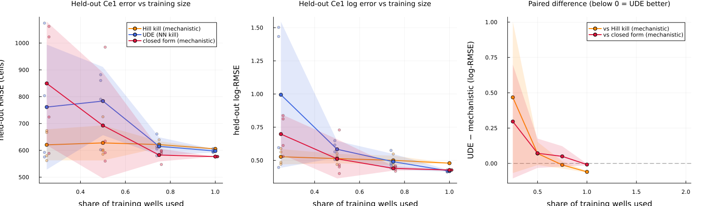

Does the UDE's held-out performance improve relative to the mechanistic kill terms as more training data are used? Training pool: the 28 drug-role wells of the NN track (20k and 30k monocultures at 0–1.47 µM, the two intermittent schedules, low-resource monocultures). Each fraction uses 4 random subsets (stratified so each line keeps a treated normal-medium well); 100% is the whole pool with 5 UDE seeds. The competition step always uses all untreated co-culture wells. Every model is scored on the same 84 held-out points as Stage 6 (30k Ce1, days 1–14, from the nominal seeding). Runtime: 36.8 min.

vs Hill kill (mechanistic): mean paired log-RMSE difference +0.468 ± 0.536 at 25% and -0.060 ± 0.006 at 100% (slope -0.646 per 100% of the pool; negative = the UDE gains with more data); UDE better in 9 of 17 paired runs (log scale).
vs closed form (mechanistic): mean paired log-RMSE difference +0.297 ± 0.403 at 25% and -0.008 ± 0.006 at 100% (slope -0.367 per 100% of the pool; negative = the UDE gains with more data); UDE better in 7 of 17 paired runs (log scale).
| frac | model | train_wells | rmse_cells | rmse_cells_sd | log_rmse | log_rmse_sd | runs |
|---|---|---|---|---|---|---|---|
| 0.25 | UDE (NN kill) | 7 | 761.3 | 233.1 | 0.9946 | 0.5506 | 4 |
| 0.25 | Hill kill (mechanistic) | 7 | 620.5 | 57.75 | 0.5271 | 0.05779 | 4 |
| 0.25 | closed form (mechanistic) | 7 | 849.5 | 230.3 | 0.6981 | 0.1509 | 4 |
| 0.5 | UDE (NN kill) | 14 | 783.7 | 127.2 | 0.5836 | 0.06238 | 4 |
| 0.5 | Hill kill (mechanistic) | 14 | 627.7 | 65.34 | 0.5133 | 0.0353 | 4 |
| 0.5 | closed form (mechanistic) | 14 | 692.5 | 197.2 | 0.5116 | 0.1477 | 4 |
| 0.75 | UDE (NN kill) | 21 | 614.9 | 33.97 | 0.4899 | 0.05873 | 4 |
| 0.75 | Hill kill (mechanistic) | 21 | 621.5 | 12.25 | 0.5004 | 0.03484 | 4 |
| 0.75 | closed form (mechanistic) | 21 | 582.5 | 23.91 | 0.4399 | 0.01728 | 4 |
| 1 | UDE (NN kill) | 28 | 597.5 | 5.432 | 0.4193 | 0.005908 | 5 |
| 1 | Hill kill (mechanistic) | 28 | 605.4 | 0 | 0.4789 | 6.206e-17 | 5 |
| 1 | closed form (mechanistic) | 28 | 576.7 | 0 | 0.4273 | 0 | 5 |
| frac | vs | d_rmse_cells | d_rmse_cells_sd | d_log_rmse | d_log_rmse_sd | runs_ude_better_log | runs_ude_better_cells | runs |
|---|---|---|---|---|---|---|---|---|
| 0.25 | Hill kill (mechanistic) | 140.8 | 265.7 | 0.4675 | 0.5356 | 1 | 1 | 4 |
| 0.25 | closed form (mechanistic) | -88.12 | 142.1 | 0.2965 | 0.4026 | 2 | 2 | 4 |
| 0.5 | Hill kill (mechanistic) | 156 | 120.1 | 0.07029 | 0.08183 | 0 | 0 | 4 |
| 0.5 | closed form (mechanistic) | 91.27 | 152.7 | 0.072 | 0.1038 | 1 | 1 | 4 |
| 0.75 | Hill kill (mechanistic) | -6.632 | 25.6 | -0.0105 | 0.02553 | 3 | 3 | 4 |
| 0.75 | closed form (mechanistic) | 32.42 | 20.83 | 0.04999 | 0.07193 | 0 | 0 | 4 |
| 1 | Hill kill (mechanistic) | -7.922 | 5.432 | -0.05958 | 0.005908 | 5 | 4 | 5 |
| 1 | closed form (mechanistic) | 20.79 | 5.432 | -0.007998 | 0.005908 | 4 | 0 | 5 |
The largest training set here is still small (≤ 28 wells, 4 dose levels, 2 switching schedules), so this curve tests the trend within the data collected, not what would happen with much larger data sets.